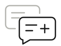

Votre équipe. Ses assistants. Le contexte en commun.
Coheld fait le lien entre les assistants de votre équipe. Partagez une information depuis votre chat. Votre collègue la retrouve dans le sien, avec sa source, pour avancer sur son travail.
Le chat de Camille
Le contexte conservé.
La source identifiée.
Le partage choisi.
Le chat de Karim
Un même espace pour conserver le contexte, partager l'information et travailler ensemble à l'ère des agents.
Conservez le contexte
Gardez les documents, les décisions et les raisons derrière chaque choix. Retrouvez ce qui permet de reprendre le travail, pas seulement les fichiers.
Partagez ce qui compte
Transmettez les informations utiles à la bonne personne. Choisissez ce que vous partagez, gardez le reste de votre côté.
Travaillez à plusieurs
Mettez les informations en commun pour faire avancer le projet. Chacun retrouve les éléments utiles à son travail, avec son assistant habituel.
Une petite équipe n'a pas besoin de tout se répéter.
Karim reprend le dossier de Camille
Il reçoit des fichiers et des messages. Il ne sait pas ce qui est décidé, ni pourquoi, ni quelle version est la bonne.

Camille passe à un autre assistant
Elle doit réexpliquer le projet, retrouver ses documents et réécrire ses consignes.

Inès ouvre un nouveau chat
Elle redonne pour la troisième fois les mêmes consignes, parce que l'information est restée dans une ancienne conversation.
Le même projet. Pas forcément le même assistant.
Un projet, c'est plus que ses fichiers.
C'est aussi ce qui a été décidé, pourquoi, les contraintes à respecter et les questions encore ouvertes. Conserver ces informations avec leurs sources permet de comprendre le travail, pas seulement de le stocker.
Votre assistant pour travailler. Coheld pour garder le fil ensemble.
Vous préparez un brief, partagez une décision, passez un dossier à un collègue. Le contexte utile accompagne le travail. Chacun peut comprendre ce qui a déjà été fait et apporter sa contribution.
Dans le fonctionnement envisagé, chacun garde sa copie du contexte. Le destinataire choisit ce qu'il ajoute à son projet : partager ne modifie pas automatiquement le travail des autres.
Continuez dans le chat de votre assistant. L'espace Coheld sert à retrouver le contexte, vérifier les informations conservées et consulter les partages de vos projets.
Le fonctionnement envisagé et ses limites.
Les possibilités de collecte dépendent de chaque assistant et des accès autorisés. Selon les cas, le contexte serait importé à la main ou collecté par une connexion compatible. Les connexions illustrées dans la maquette ne sont pas des intégrations validées.
Le produit est conçu pour
- Garder le contexte de chaque projet, avec la source, la date et le statut de chaque information
- Faire passer un travail d'une personne à une autre, élément par élément
- T'aider à reprendre un projet avec un autre assistant
- Te laisser tout télécharger
La plateforme ne fait pas
- Remplacer ton assistant : tu continues à travailler dans ton chat
- Lire tes conversations privées sans ton autorisation
- Récupérer le contexte de la même façon chez tous les assistants : selon l'assistant, c'est automatique ou importé à la main, et c'est indiqué
- Ajouter quoi que ce soit chez quelqu'un sans son accord
Moins de contexte à reconstituer. Plus de travail en commun.
Un espace pour conserver, partager et faire avancer les projets de votre équipe.